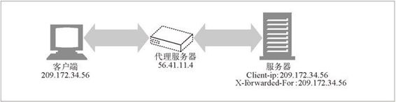

11.3 客户端 IP 地址
早期的 Web 先锋曾尝试着将客户端 IP 地址作为一种标识形式使用。如果每个用户都有不同的 IP 地址，IP 地址（如果会发生变化的话）也很少会发生变化，而且 Web 服务器可以判断出每条请求的客户端 IP 地址的话，这种方案是可行的。通常在 HTTP 首部并不提供客户端的IP 地址，1 但 Web 服务器可以找到承载 HTTP 请求的 TCP 连接另一端的IP 地址。
1 稍后我们会看到，有些代理确实会添加一个 Client-IP 首部，但这并不是 HTTP 标准的一部分。
比如，在 Unix 系统中，函数调用 getpeername 就可以返回发送端机器的客户端 IP 地址：
status = getpeername(tcp_connection_socket,...);
但是，使用客户端 IP 地址来识别用户存在着很多缺点，限制了将其作为用户识别技术的效能。
客户端 IP 地址描述的是所用的机器，而不是用户。如果多个用户共享同一台计算机，就无法对其进行区分了。
很多因特网服务提供商都会在用户登录时为其动态分配 IP 地址。用户每次登录时，都会得到一个不同的地址，因此 Web 服务器不能假设 IP 地址可以在各登录会话之间标识用户。
为了提高安全性，并对稀缺的地址资源进行管理，很多用户都是通过网络地址转换（Network Address Translation，NAT）防火墙来浏览网络内容的。这些 NAT 设备隐藏了防火墙后面那些实际客户端的 IP 地址，将实际的客户端 IP 地址转换成了一个共享的防火墙 IP 地址（和不同的端口号）。
HTTP 代理和网关通常会打开一些新的、到原始服务器的 TCP 连接。Web 服务器看到的将是代理服务器的 IP 地址，而不是客户端的。有些代理为了绕过这个问题会添加特殊的 Client-IP 或 X-Forwarded-For 扩展首部来保存原始的 IP 地址（参见图 11-1）。但并不是所有的代理都支持这种行为。

图 11-1 代理可以添加扩展首部，来传递原始客户端的 IP 地址
有些 Web 站点仍然使用客户端 IP 地址在会话之间跟踪用户的行为，但这种站点并不多。无法用 IP 地址确定目标的地方太多了。
少数站点甚至将客户端 IP 地址作为一种安全特性使用，它们只向来自特定 IP 地址的用户提供文档。在内部网络中可能可以这么做，但在因特网上就不行了，主要是因为因特网上 IP 地址太容易被欺骗（伪造）了。路径上如果有拦截代理也会破坏此方案。第 14 章讨论了一些强大得多的特权文档访问控制策略。